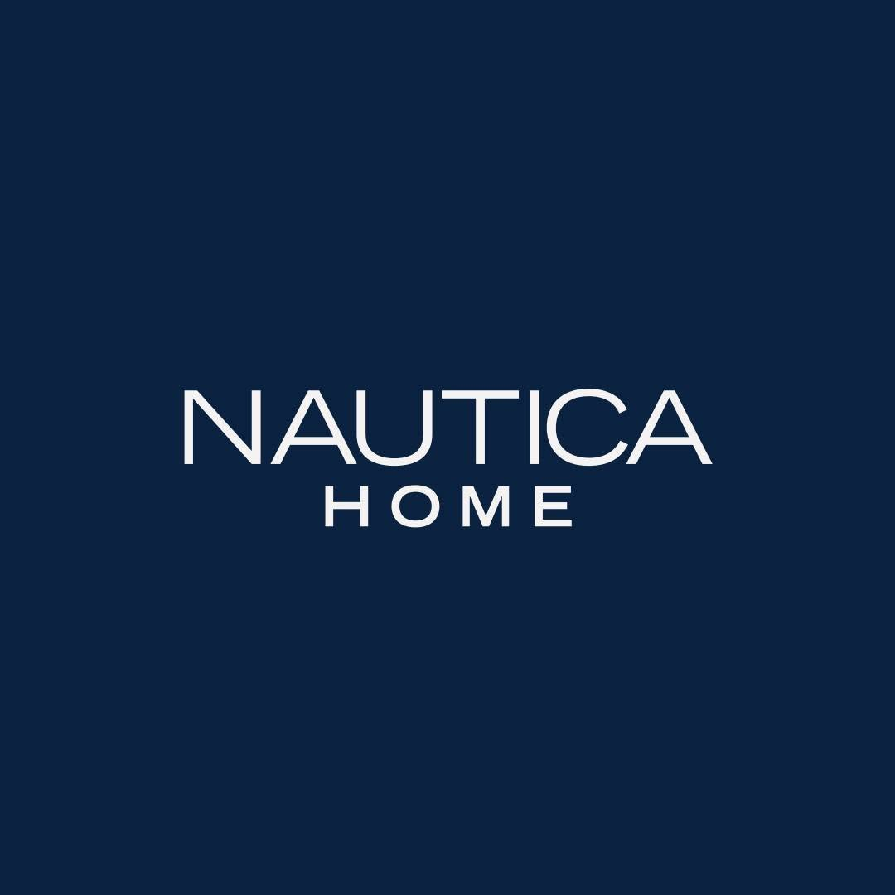

Responsabilidad actual
Marketing · Grupo Segel
Náutica Home y Casa Glick
Llevo el marketing de las marcas de mobiliario y diseño del grupo, con Náutica Home como marca principal. Junto con el equipo desarrollé los sitios web y las automatizaciones de ambas marcas. Trabajo con las cuentas comerciales del grupo, entre ellas Sam's, Home Depot y Liverpool.
nauticahome.com.mx · casaglick.com